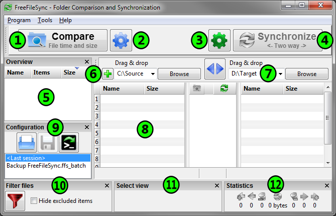

- Folder Comparison and Synchronization -
Choose
left and right directories.
"Compare"
them.
Select
synchronization settings.
Press
"Synchronize..."
to begin synchronization.

Start comparison
Specify comparison settings
Set sync configuration
Start synchronization
Add additional folder pairs
Swap sides
Select left and right directories
Save/load configuration
Filter files
Specify category for display
Synchronization statistics/preview
Detect moved and renamed files and folders
Copy locked files (Volume Shadow Copy Service)
Detect conflicts and propagate deletions
Binary comparison
Full support for Symbolic Links
Run as a batch job
Multiple folder pairs
Preserve NTFS sparse files
Support very long path names > 260 characters
Transactional file copy
Cross-platform: Windows/Linux
Expand environment variables like %USERPROFILE%
Access variable drive letters by volume name (USB sticks)
Native 32 and 64-bit builds
Versioning of deleted files
Optimal sync sequence prevents disc space bottlenecks
Full unicode support
Highly optimized performance
Include/exclude files via filter
Local or portable installation
Handle daylight saving time changes on FAT/FAT32
Use macros %time%, %date%, et al. for recurring backups
Case sensitive synchronization
Built-in locking serializes multiple jobs running against the same network share